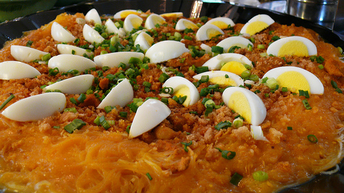

here are lots of Batangas foods you’ll love. Batangueños are skilled cooks, and fiestas around the towns and barrios will show you their competence in cooking. Barrio Fiesta’s are very common in Batangas during the month of May. Actually, you can go around the whole month of May, in different barrios celebrating their respective fiesta.
Ingredients for PANCIT BIHON:
- 1 lb pancit bihon Rice Noodles
- 1/2 lb. pork cut into small thin slices
- 1/2 lb. chicken cooked, deboned, and cut into thin slices
- 1/8 lb. pea pods or snow pea
- 1 cup carrot
- 1/2 small cabbage chopped
- 1 cup celery leaves chopped finely
- 1 medium sized onion chopped
- 1/2 tbsp garlic minced
- 1 pc chicken cube
- 5 tbsp soy sauce
- 3 to 4 cups water
Preparation:
- In a large pot, Saute the garlic and onion Add the pork and chicken then let cook for 2 minutes Add the chicken cube and water then simmer for 15 minutes Put in the carrots, pea pod, cabbage, and celery leaves and simmer for a few minutes Remove all the ingredients in the pot except for the liquid and set them aside In the pot with the liquid in, add the soy sauce and mix well Add the pancit bihon (makes sure to first soak it in water for about 10 minutes) and mix well. Cook until liquid evaporates completely Put-in the vegetables and meat that were previously cooked and simmer for a minute or two Serve hot. Share and enjoy!
Ingredients for PANCIT BIHON:
- 6 oz. minced beef or carabeef
- 12 oz. fresh Miki noodles
- 3 to 4 oz. pork liver sliced
- 1 medium red onion cubed
- 1 1/2 cup mung bean sprouts
- 3/4 cups chopped green onions
- 1 cup shredded cabbage
- 1 cup carrot julienne
- 3 tablepespoons soy sauce
- 1 egg
- 1/4 teaspoon ground black pepper
- 6 oz. lechon carajay chopped
- 3 tablespoons cooking oil
Batil for PANCIT BIHON:
- 1 lb. beef bones with meat
- 1 beef cube
- 1 egg
- 6 to 8 cups water
- 1 stalk celery chopped
- 1 medium carrot cubed
- 1 small onion cubed
Preparation:
- Prepare the stock (or batil) by boiling water in a cooking pot. Add the beef bones. Let boil for 5 minutes.Hold the chopped celery, carrot, and onion together using a cheese cloth and secure using a kithen thread. This will be the mirepoix. Add the mirepoix in the cooking pot and let boil. Add the beef cube. Continue to boil in low heat for 3 hours or until the beef gets tender. You may add more water if needed. Once the stock is ready, set aside.Heat the cooking oil in a wide pan or wok. Saute the onion until soft. Add the minced beef. Saute for 3 to 5 minutes.Stir-in the sliced liver. Saute for 3 minutes.Add the mung bean sprouts, green onion, cabbage, and carrots. Continue to saute for 2 to 3 minutes.Scoop-in 4 to 5 cups of beef stock. Let boil.Push the meat and vegetables on one side of the pan. Arrange the Miki noodles on the other side. Toss the noodles while cooking. Add soy sauce and ground black pepper. cook for 2 to 3 minutes.Push the noodles on one side to create an opening. Crack one egg and gently let it slide into the broth. Poach until cooked. Remove the poached egg and set aside.Remove the noodles from the pan and arrange in a plate.Scoop out the remaining stock and place in a small sauce pan. Turn off the heat and transfer the cooked meat and vegetables in a clean plate. Set aside.Meanwhile, heat the saucepan with the stock from the pan. Once it starts to boil, crack a piece of egg and add it to the pot. Quickly stir and continue to cook while constantly stirring for 1 to 2 minutes or until an egg drop soup consistency is formed. Transfer to a bowl.Start to assemble the Pancit Batil Patung by topping the miki noodles with poached egg. Add the sautéed meat and vegetables over the egg and top with lechon carajay.Serve with a bowl of batil on the side along with a dip that consists of chopped onion, soy sauce, and vinegar.Share and enjoy!
Ingredients for PANCIT CHAMI:
- 1 lb. fresh noodles
- 4 ounces pork sliced
- 2 ounces chicken sliced
- 3 ounces pork liver sliced
- 2 ounces pork fat
- 3 tablespoons soy sauce
- 3 tablespoons oyster sauce
- 2 tablespoons brown sugar
- 1 teaspoon crushed red pepper
- 1 piece onion chopped
- ½ head cabbage sliced
- ¾ cup carrot Julienne
- 2 teaspoons cornstarch
- 8 pieces quail eggs boiled
- 1 cup water
Preparation:
- Heat wok or pan. Sear pork fat until enough oil is extracted. Saute onion and garlic until the onion softens. Add pork, chicken, and liver. Saute until the outer parts turn light brown. Add soy sauce, oyster sauce, and water. Cover the wok. Let the liquid boil. Add crushed red pepper and brown sugar. Stir. Continue boiling for 5 minutes. Add fresh noodles. Toss. Put the carrot and cabbage into the wok. Continue tossing until all ingredients are well blended. Cover and cook for 2 minutes. Season with ground black pepper and pour cornstarch slurry (2 teaspoons of cornstarch + 2 teaspoons of soy sauce + ¼ cup water). Toss.Add boiled quail eggs. Transfer to a serving plate. Serve! Share and enjoy!
Ingredients for PANCIT PALABOK:
- 500 grams rice noodles bihon
- 4 ounces pork sliced
- 2 ounces chicken sliced
- 3 ounces pork liver sliced
- 2 ounces pork fat
- 3 tablespoons soy sauce
- 3 tablespoons oyster sauce
- 2 tablespoons brown sugar
- 1 teaspoon crushed red pepper
- 1 piece onion chopped
- ½ head cabbage sliced
- ¾ cup carrot Julienne
- 2 teaspoons cornstarch
- 8 pieces quail eggs boiled
- 1 cup water
Sauce ingredients:
- 2 tbsp cooking oil
- 1/2 lb ground pork
- 1 tbsp anatto powder
- 3 cups pork broth
- 1 piece shrimp bouillon
- 6 tablespoons all-purpose flour
- 2 tbsp fish sauce
- 1/2 tsp ground black pepper
Topping ingredients:
- 1 cup pork belly boiled and sliced thinly into small pieces
- 4 ounces firm tofu fried and sliced into cubes
- ½ cup tinapa flakes smoked fish
- ½ cup chicharon pounded
- 2 hard boiled eggs sliced
- ½ cup cooked shrimps boiled or steamed
- 1/4 cup green onion or scallions finely chopped
- 3 Tablespoons toasted garlic
- 2 lemons sliced (or 6 pieces calamansi)
Preparation:
- oak the rice noodles in water for about 15 minutes. Drain and set aside. Cook the sauce by heating a saucepan. Pour-in the cooking oil. When the oil is hot enough, put-in the ground pork and cook for about 5 to 7 minutes Dilute the annato powder in pork broth then pour the mixture in the saucepan. Bring to a boil (If you are using anatto seeds, soak them first in 3 tbsp water to bring-out the color) Add the shrimp cube and stir and simmer for 3 minutes Add the flour gradually while stirring. Add the fish sauce and ground black pepper then simmer until sauce becomes thick. Set aside. Meanwhile, boil enough water in a pot. Place the soaked noodles in a strainer (use metal or bamboo strainer) then submerge the strainer in the boiling water for about a minute or until the noodles are cooked. (make sure that the noodles are still firm) Remove the strainer from the pot and drain the liquid from the noodles. Place the noodles in the serving plate. Pour the sauce on top of the noodles then arrange the toppings over the sauce. Serve with a slice of lemon or calamansi. Share and enjoy!
Ingredients for PORK ADOBO:
- 2 lbs pork belly
- 2 tablespoons garlic minced or crushed
- 5 dried bay leaves
- 4 tablespoons vinegar
- 1/2 cup soy sauce
- 1 tablespoon peppercorn
- 2 cups water
- Salt to taste
Preparation:
- Combine the pork belly, soy sauce, and garlic then marinade for at least 1 hour Heat the pot and put-in the marinated pork belly then cook for a few minutes Pour remaining marinade including garlic. Add water, whole pepper corn, and dried bay leaves then bring to a boil. Simmer for 40 minutes to 1 hour Put-in the vinegar and simmer for 12 to 15 minutes Add salt to taste Serve hot. Share and enjoy!
Ingredients for ADOBONG BABOY SA GATA:
- 2 lbs pork belly
- 1/4 cup soy sauce
- 1/4 cup white vinegar
- 6 cloves garlic crushed
- 2 cups coconut cream
- 2 teaspoons whole peppercorn
- 3 pieces dried bay leaves
- 1 1/2 cup water
- 2 tablespoons cooking oil optional
- Salt to taste
Preparation:
- Combine pork, soy sauce, vinegar, and crushed garlic. Mix well. Marinate the pork for 3 hours. Heat a cooking pot. Drain the liquid marinade from the pork and set it aside. Put the marinated pork into the cooking pot. Continue to cook until brown. Pour cooking oil. Cook for 1 minute until the garlic browns a bit. Pour the marinade and water. Let boil. Add whole peppercorn and dried bay leaves. Cover and continue to boil in medium heat until the pork becomes tender. Pour coconut cream. Stir. Cover and continue to cook for 10 minutes. Continue to boil until the coconut milk reduces to half. Add salt. Stir. Transfer to a serving bowl. Serve. Share and enjoy!
Ingredients for PININYAHANG BABOY SA GATA:
- 2 ½ lbs. Pork belly cubed
- 1 red bell pepper sliced
- 1 green bell pepper sliced
- 20 ounces canned pineapple chunks with juice
- 1 carrot cubed
- 4 cloves garlic chopped
- 1 onion chopped
- 2 cups coconut milk
- 1 cup water as needed
- 3 tablespoons cooking oil
- Salt and fish sauce to taste
Preparation:
- Heat oil in a pan. Saute garlic and onion. Once the onion softens, add pork. Saute until the color of the pork turns light brown. Pour pineapple juice, half of the pineapple chunks, and coconut milk into the pan. Let boil. Cover the pan and adjust the heat to a low setting. Continue boiling the pork until it tenderizes. Note: you can add water if the meat needs more time to tenderize. Add carrots and remaining pineapple. Cook for 7 minutes. Add bell peppers. Cook for 5 minutes. Season with ground black pepper and fish sauce. Serve warm with rice. Share and enjoy!
Ingredients for SPRITE PORT ADOBO:
- 2 lbs. pork belly cubed
- 7 tablespoons soy sauce
- 4 tablespoons white vinegar
- 1 can Sprite or similar soda pop
- 1 piece onion minced
- 5 pieces dried bay leaves
- 1 ½ teaspoons whole peppercorn
- 5 cloves garlic crushed
- ½ cup water
- 3 tablespoons cooking oil
Preparation:
- In a large bowl, combine soy sauce and Sprite with the pork belly. Mix well. Cover the bowl and refrigerate. Let the pork marinate for at least 6 hours. Using a kitchen sieve, drain the marinade out of the bowl. Set it aside. Heat oil in a cooking pot Once the oil becomes hot, saute garlic until light brown Add onion. Continue to saute until soft Add pork belly. Stir and cook until light brown Pour the marinade (Sprite and soy sauce). Cover the pot and let boil. Add whole peppercorn and dried bay leaves. Cover the pot and continue to cook for 30 minutes in medium heat. Pour vinegar into the pot. Let the liquid re-boil. Stir. Cover and cook for 25 to 30 minutes. Note: add water if needed. Transfer to a serving plate. Serve with rice. Share and enjoy!
Ingredients for PANUTSA:
- 2 cups white sugar
- 1/2 cup water
- salt
- 1/4 teaspoon baking soda
- 1 1/2 cups salted peanuts
Preparation:
- Brush butter all over a rimmed baking sheet. In a saucepan over high heat combine sugar, water and salt. Leave for about 3 minutes or until golden. Stir occasionally until it turns amber in color, about 8-10 minutes. Remove saucepan from heat and stir in peanuts and baking soda. Immediately pour over the baking sheet and let it cool and harden. Once cooled, break into chunks.
Ingredients for BIKO:
- 2 cups glutinous rice aka sticky rice or malagkit
- 1 1/2 cups water
- 2 cups brown sugar
- 4 cups coconut milk
- 1/2 tsp salt
Preparation:
- Combine the sticky rice and water in a rice cooker and cook until the rice is ready (we intentionally combined lesser amount of water than the usual so that the rice will not be fully cooked) While the rice is cooking, combine the coconut milk with brown sugar and salt in a separate pot and cook in low heat until the texture becomes thick. Stir constantly. Once the rice is cooked and the coconut milk-sugar mixture is thick enough, add the cooked rice in the coconut milk and sugar mixture then mix well. Continue cooking until all the liquid evaporates (but do not overcook). Scoop the cooked biko and place it in a serving plate then flatten the surface. Share and Enjoy!